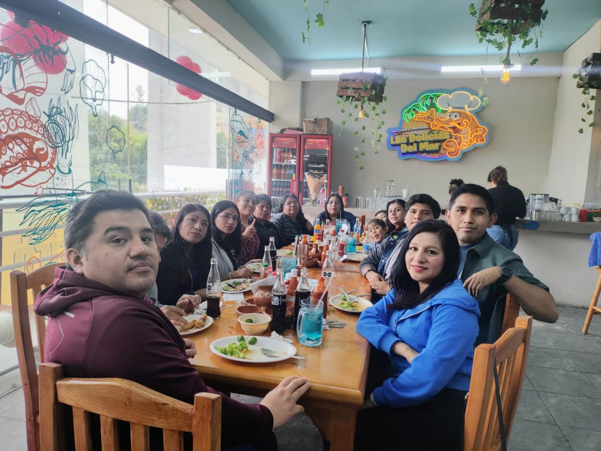

👁️🗨️👨💻 Lo visible impacta. Lo invisible lo hace posible. 🔧💡
I want to become the CEO and CTO of a Mexican technology company someday.
I still have a long way to go, but I will work hard to get there.
Many thanks to everyone who supports me.
No habia podido hacer publicaciones en estos días, actualemte me siento algo mal por algo que hice
pero ya ni modo, ahora solo tengo que pemsar mejor las cosas que hago y digo.
Tambien tengo algo de tarea del diplomado, creo que tengo que investigar algunas cosas
que no me quedaron de todo claro, tambien tengo que avanzar al registro de usuarios de la pagina,
tengo quye organizarme mejor. Bueno eso es todo por el momento.
🌟 ¡Feliz Día del Maestro! 🌟
Hoy celebramos a quienes con paciencia, pasión y compromiso transforman vidas todos los días.
Gracias por enseñar con el corazón, por ser guías, inspiración y ejemplo.
Su labor deja huellas imborrables en cada persona que aprende, sueña y crece gracias a ustedes.
🍎 Gracias, maestros, por sembrar conocimiento y cosechar futuro.
#DíaDelMaestro #GraciasMaestros #EducarEsTransformar
Ya estoy trabajando en un registro de usuarios para la base de datos de esta pagina, para dejar de escribir todas las publicaciones desde el codigo y poder hacerlo desde la interfaz de la pagina, espero que el registro de usuarios este disponible apartir del 29 de mayo y la posibilidad de hacer publicaciones en plataforma a partir del 15 de junio, ya que estare algo ocupado con el diplomado, tratare de hacerme tiempo para avanzar a este proyecto, al cual le tengo mucho cariño.
No me dio tiempo de poder estudiar durante el día, creo que solo practicare la creacion de bases de datos en local con XAMPP, para asi poder estar practicando antes de el viernes, ya que sera un fin de semana algo atareado, sera mejor que lo domine desde antes. Tambien quiero empezar a hacer mi biblioteca digital para subir contenido sobre los que voy estudiando, pero de poco a poco tratare de avanzar, espero para finales de este año tener un mejor sitio WEB. 🧑💻🚀
Hoy toco ayudar un poco en casa y pasar tiempo en familia, estuve agregando el menu de navegacion y el icono de buscador, es posible que sea mi propia libreria de iconos, pero veremos como avanza esto a futuro, por lo pronto solo es visual ya que no hacen nada, pero tambien mañana toca estudiar base de datos ya que tengo que seguir estudiando para el diplomado y tambien ya estoy pensando en buscar un trabajo, a ver que encuentro, por lo pronto es todo por hoy. 🧑💻🚀
Hoy me la pase con mi familia para convivir y festejar el día de las madres, la verdad me la pase muy bien y se agradece mucho poder tener momentos en familia, ya que en estos ultimos años he sido algo alejado de la famlia, pero tambien es importante. 🌸💐 ¡Feliz Día de las Madres! 👩👧👦💖🎉 
No puedo seguir cometiendo errores, tengo que ser mas disciplinado, si quiero grandes resultados debo esforzarme más, empezare a publicar diario por ese medio, por lo pronto sera texto plano y fotos y posiblemente videos, de todos modos sera una pagina estatica, lo que quiero es empezar a arriesgarme como antes pero con disiplina, posiblemente suba lo que aprendo en el diplomado, como excel, inglés, japones y python, auque tambien debo mejorar mi escritura, pero eso sera despues, de apoco sera por el momento.
Es todo por esta noche, ire a descansar, tambien estare haciendo publicaciones por X e instagram, mañana hay mucho que hacer.
Estarea haciendo publicaciones de lo que pienso, lo que hago y aprendo, actualmente estare aprendiendo python, no se que tal me vaya, espero que bien.
Primera publicacion de prueba